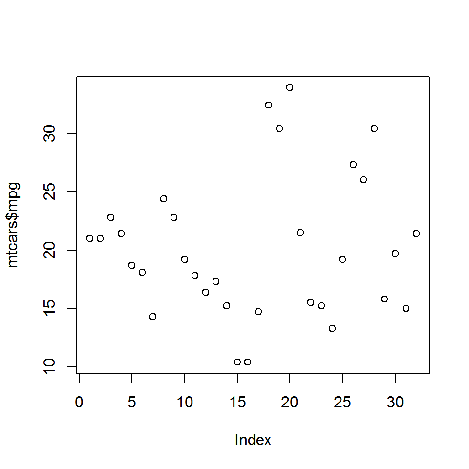
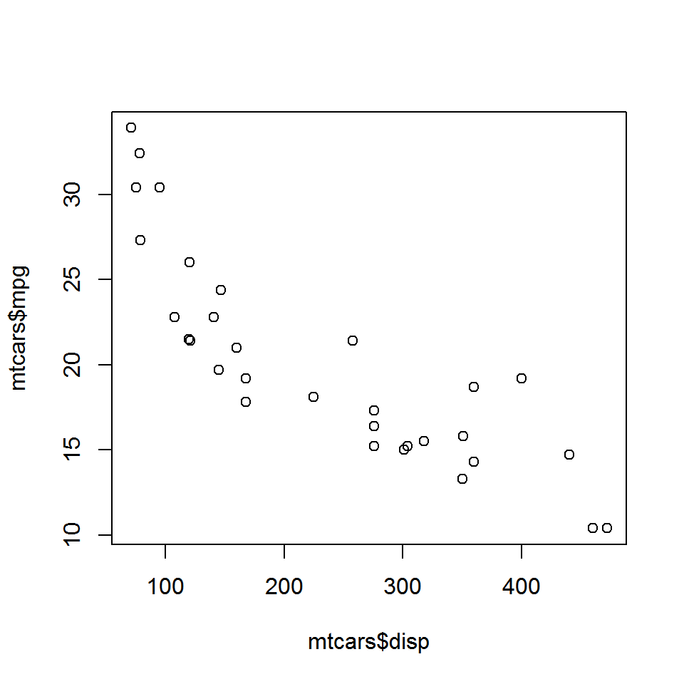
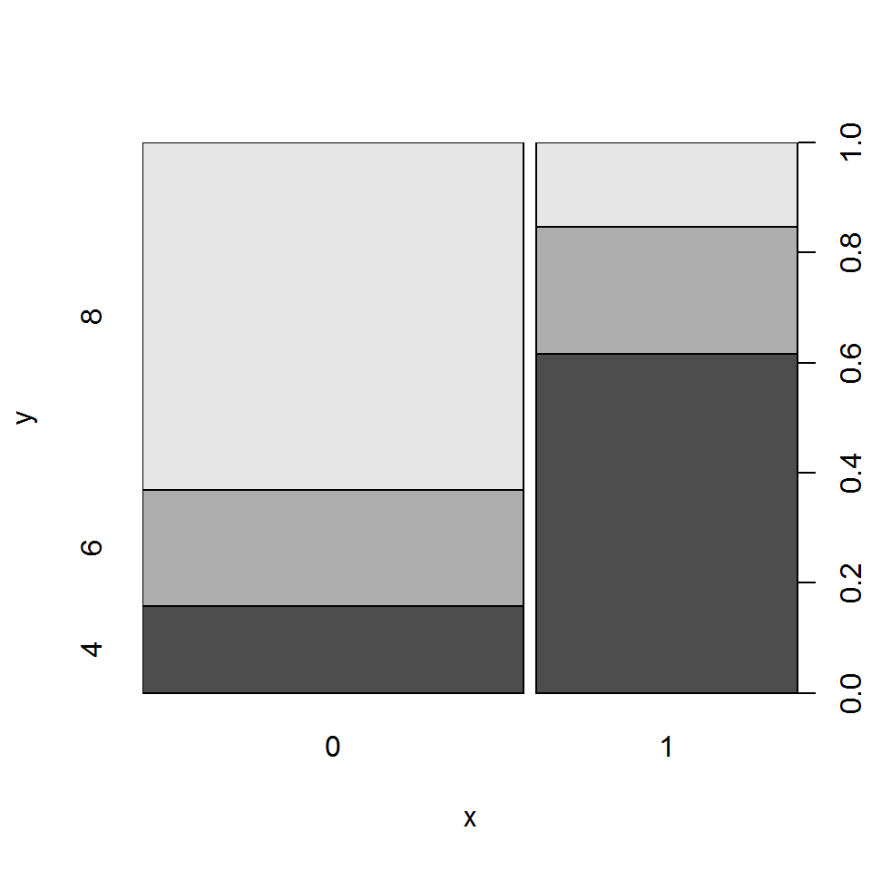
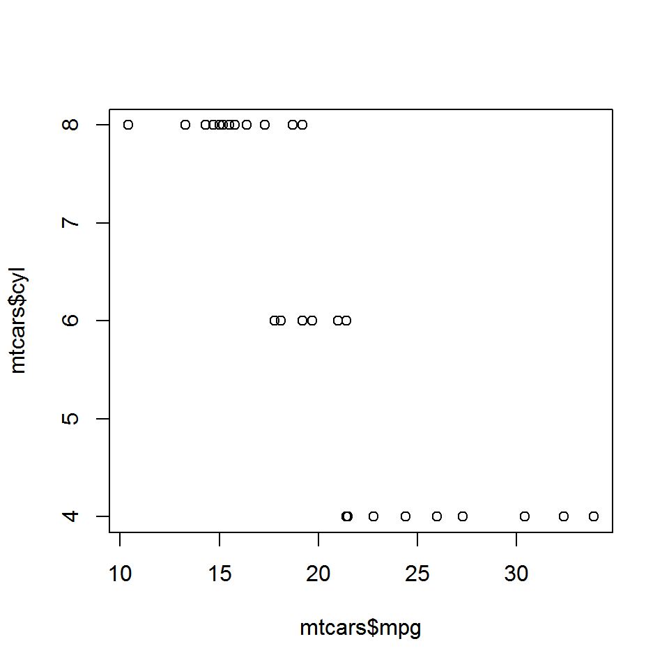
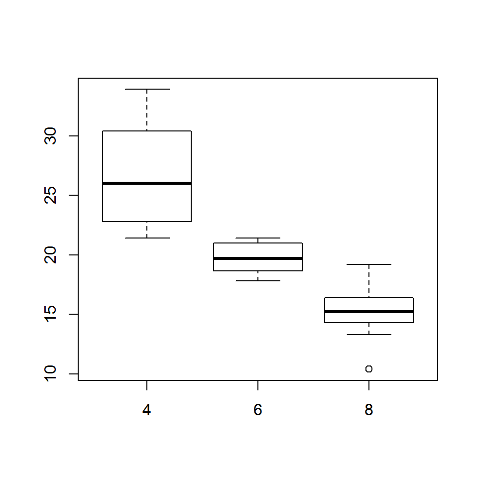

Introduction
This is the first post of the series Data Visualization With R. The objective of the series is to provide a gentle introduction to working with base graphics in R. We will come up with a similar series using ggplot2 shortly.
- what is data visualization
- why visualize data
- understand R graphics system
- graphics
- ggplot2
- lattice
- build some simple plots
What is data visualization?
In simple words, data visualization is the representation of data in graphical format.

data-viz
Why visualize data?
- Explore: Visualization helps in exploring and explaining patterns and trends
- Detect: Patterns or anomalies in data can be detected by looking at graphs
- Make sense: Possible to make sense of large amount of data efficiently and in time
- Communicate: Easy to communicate and share the insights from data
R Graphics System
- graphics
- ggplot2
- lattice
Graphics
- It is part of base R and is the fundamental package for visualizing data.
- It has a lot of good features and we can create all the basic plots using it.
ggplot2
ggplot2, created by Hadley Wickham, is based on the Grammar of Graphics written by Leland Wilkinson. It has a structured approach to data visualization and builds upon the features available in the Graphics and Lattice packages.
Lattice
The lattice package is inspired by Trellis Graphics and created by Deepayan Sarkar. It is a very powerful data visualization system with an emphasis on multivariate data.
Getting Help
Use the help() to learn more about plot() function and mtcars data set.
help(plot)
help(mtcars)mtcars
head(mtcars)## mpg cyl disp hp drat wt qsec vs am gear carb
## Mazda RX4 21.0 6 160 110 3.90 2.620 16.46 0 1 4 4
## Mazda RX4 Wag 21.0 6 160 110 3.90 2.875 17.02 0 1 4 4
## Datsun 710 22.8 4 108 93 3.85 2.320 18.61 1 1 4 1
## Hornet 4 Drive 21.4 6 258 110 3.08 3.215 19.44 1 0 3 1
## Hornet Sportabout 18.7 8 360 175 3.15 3.440 17.02 0 0 3 2
## Valiant 18.1 6 225 105 2.76 3.460 20.22 1 0 3 1variable info
str(mtcars)## 'data.frame': 32 obs. of 11 variables:
## $ mpg : num 21 21 22.8 21.4 18.7 18.1 14.3 24.4 22.8 19.2 ...
## $ cyl : num 6 6 4 6 8 6 8 4 4 6 ...
## $ disp: num 160 160 108 258 360 ...
## $ hp : num 110 110 93 110 175 105 245 62 95 123 ...
## $ drat: num 3.9 3.9 3.85 3.08 3.15 2.76 3.21 3.69 3.92 3.92 ...
## $ wt : num 2.62 2.88 2.32 3.21 3.44 ...
## $ qsec: num 16.5 17 18.6 19.4 17 ...
## $ vs : num 0 0 1 1 0 1 0 1 1 1 ...
## $ am : num 1 1 1 0 0 0 0 0 0 0 ...
## $ gear: num 4 4 4 3 3 3 3 4 4 4 ...
## $ carb: num 4 4 1 1 2 1 4 2 2 4 ...plot()
Now that we have some idea about the data set, let us explore the plot() function. We will use the following different data inputs and observe the kind of plots that are generated:
- Case 1: 1 continuous variable
- Case 2: 1 categorical variable
- Case 3: 2 continuous variables
- Case 4: 2 categorical variables
- Case 5: 1 continuous and 1 categorical variable
- Case 6: 1 categorical and 1 continuous variable
One continuous variable
plot(mtcars$mpg)
One categorical variable
plot(as.factor(mtcars$cyl))
Two continuous variables
plot(mtcars$disp, mtcars$mpg)
Two categorical variables
plot(as.factor(mtcars$am), as.factor(mtcars$cyl))
Continuous/Categorical variable
plot(mtcars$mpg, mtcars$cyl)
Categorical/Continuous variable
plot(as.factor(mtcars$cyl), mtcars$mpg)
Summary
In this first post, we have explored the plot() function to understand the different types of plots it can create based on the input types. Before we begin to build different plots such as bar plots, box plots, scatter plots or line plots, we will quickly learn how to add title and labels to a plot. In the next post, we will learn the following:
- Title & subtitle
- Axis labels & range
- Color, font style and size